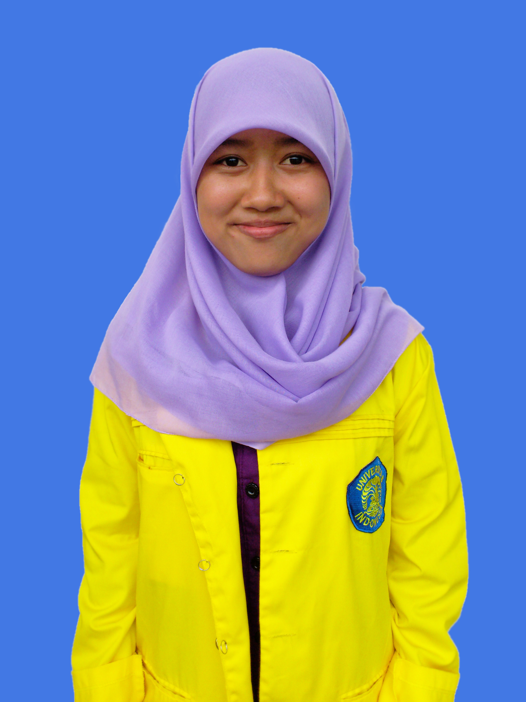

About
Ringkasan
Nama saya Putri Rokhmayati. Saya adalah seorang tuna netra yang memiliki ketertarikan di bidang pemrograman. Motivasi saya untuk belajar pemrograman yaitu karena saya terinspirasi oleh para programer yang mendedikasikan ilmu mereka untuk membuat aplikasi yang bermanfaat di bidang sosial dan dakwah. saya berharap dengan ilmu ini saya juga bisa menjadi pribadi yang bermanfaat untuk orang-orang di sekitar saya, teman-teman disabilitas, dan umat islam.
"Menuntut ilmu adalah taqwa. Mencari ilmu adalah jihad. Mengulang-ngulang ilmu adalah zikir. Menyampaikan ilmu adalah ibadah."
(Imam Al-Gazali)
Data Diri
Data Diri
Pendidikan
Fakultas Teknik, Universitas Pamulang 2020-Sekarang
Teknik Informatika
Fakultas Teknik, Universitas Indonesia 2013
Teknik Kimia
Tech Muda Batch 4 Maret 2020-Mei 2020
Web Development
Indosat Digital Camp Agustus 2019-Oktober 2019
Dasar Pemrrograman Web
Media Sosial
| : | Putri Rokhmayati | |
| Instragram | : | @putrirokhmayati |
| : | @PutriRokhmayati |